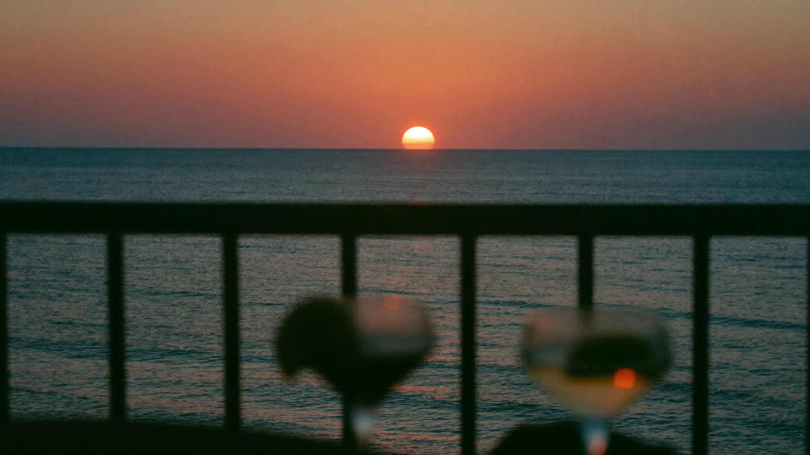
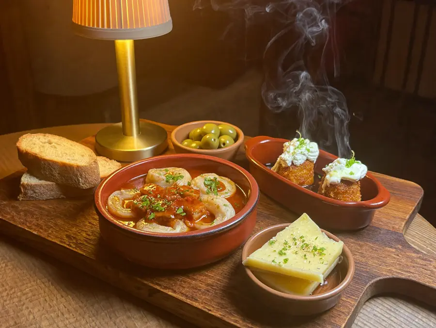
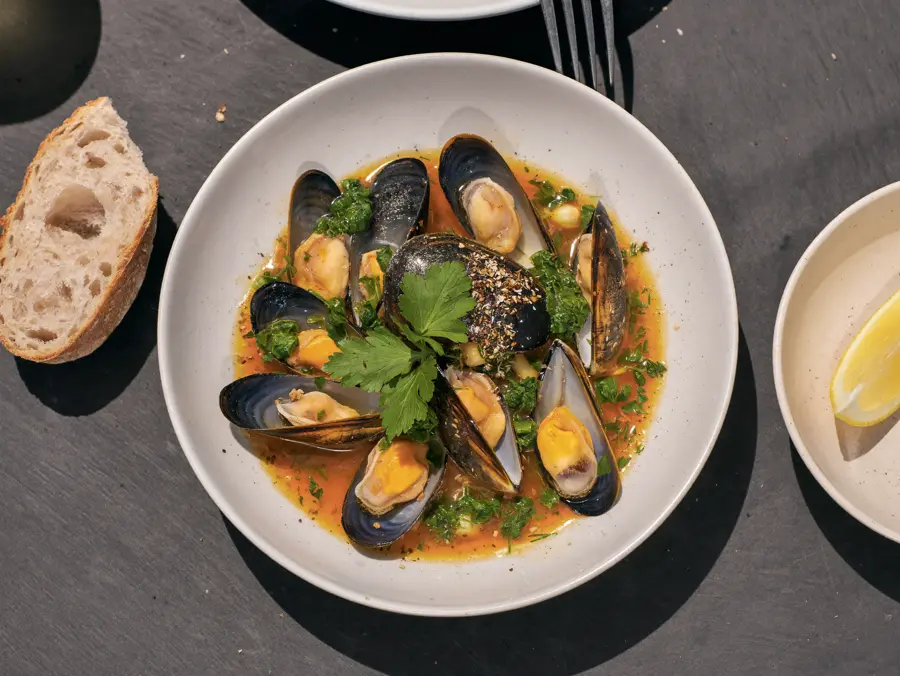
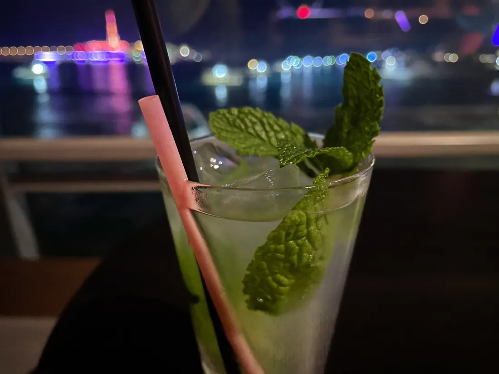

Lounge bar y cocina al borde del agua. Tapas, mejillones a la marinera, mojitos y la puesta de sol de L'Escala.

La casa
De las 992 opiniones que hay escritas sobre Medusa, el mar aparece en 71. Es, con diferencia, lo más repetido — por delante de las tapas, de la terraza y de la comida. Aquí la vista no es un extra: es media casa.
Medusa está en el Carrer del Cargol, 3A. Es lounge bar y es cocina — de ahí lo de bar i àpats: se puede venir a tomar algo o a cenar, y quedarse hasta tarde.
Cocina y barra



Lo que dicen
Cocina variada y excelente por un precio razonable. Personal encantador, y su mojito… una maravilla. Igual que el tartar de salmón. Situado frente al mar.
Puesta de sol increíble, tapas excelentes y en muy buena compañía. El personal también, muy bien. Lo recomiendo.
La noche
Cuando el resto del pueblo ya ha cerrado, aquí todavía se sirve. Y eso, ahora mismo, no lo sabe nadie que no haya pasado por delante.
Cómo llegar
En el Carrer del Cargol, en L'Escala. En sala, en la terraza y a domicilio.
Llamar ahora Abrir en MapsPreguntas frecuentes
Sí. Es lo que más nombra la gente: el mar aparece en 71 opiniones y las vistas en 13.
Hasta las 02:00, de los pocos sitios de L'Escala que aguantan tan tarde.
Las dos cosas. Es lounge bar y cocina — tapas, mejillones a la marinera y carta.
De 20 a 30 € por persona, confirmado por 156 personas en Google.
Sí, y sale nombrada en 15 opiniones. Es donde se ve la puesta de sol.